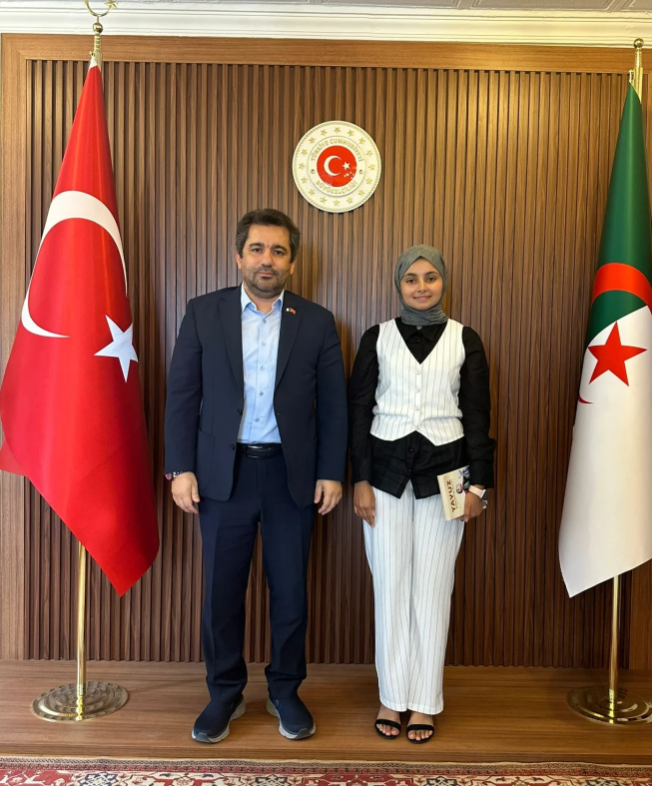
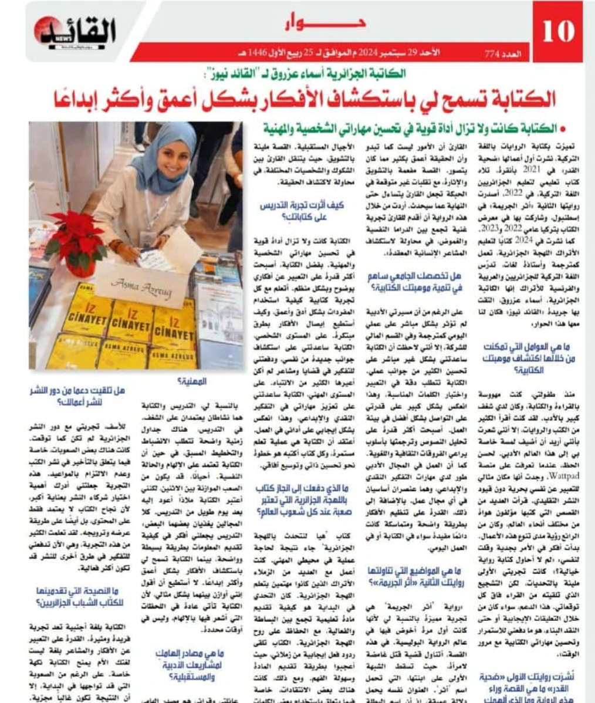

ASMA AZREUG
yazar tercüman gezgin

yazar tercüman gezgin

Bugün Sayın Büyükelçimiz Mücahit KÜÇÜKYILMAZ Bey tarafından kabul edildim. Türkçe yazdığım kitaplarımı sunmuş, kendisiyle sohbet etme şansım olmuştur. Ayrıca kendisinin imzalı eserlerini de armağan ettiği için teşekkürlerimi sunmak isterim.
Bu buluşma benim için hem edebi hem de kültürel açıdan çok kıymetliydi. Yazın hayatımda önemli bir yer tutan bu anıyı paylaşmaktan mutluluk duyuyorum.

Asma Azreug, 29 Eylül 2024 tarihinde Arap basınında yayımlanan kapsamlı bir röportajla okurlarla yeniden buluştu. Röportajda yazarlık yolculuğunu, Türkçe kaleme aldığı eserleri ve yazının hayatındaki yerini anlattı.
Söyleşide yazmanın kendisi için yalnızca bir ifade biçimi değil, aynı zamanda fikirlerini daha derin ve daha yaratıcı şekilde keşfetmesini sağlayan güçlü bir araç olduğunu vurguladı. Bu röportaj, yazarın uluslararası edebiyat çevrelerinde artan görünürlüğünü de ortaya koydu.

Düzenlenen özel bir etkinlikte okuyucularıyla bir araya gelen Asma Azreug, imza gününde edebiyat ve yazarlık üzerine samimi sohbetler gerçekleştirdi. Yoğun ilgi gören buluşmada yazar, okurlarıyla birebir iletişim kurma fırsatı buldu.
Etkinlik sonunda katılımcılara teşekkür eden Azreug, bu tür buluşmaların yazarlık yolculuğuna ayrı bir anlam kattığını ifade etti. Okuyucularıyla kurduğu bağın, yeni eserleri için de ilham kaynağı olduğunu belirtti.